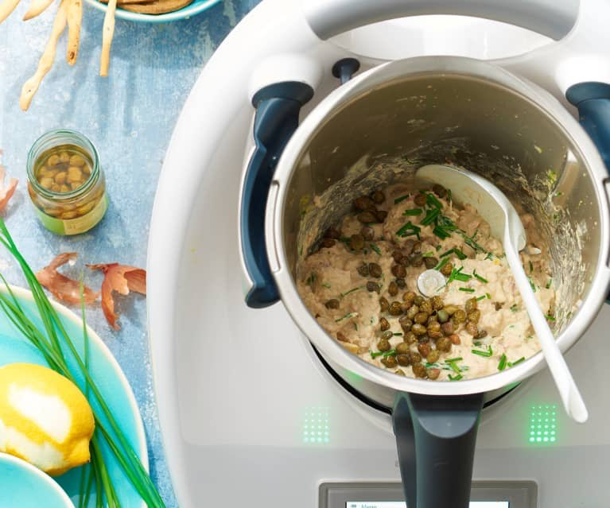

Rillettes de thon, échalotes et ciboulette
Ingrédients
×
- 2 échalotes
- 1 botte de ciboulette
- zeste de citron
- 280 g de thon au naturel
- 1 c. à c. de moutarde
- 150 g de fromage frais
- sel
- poivre
- 1 c. à s. de câpres

Pour un bocal.
Préparation
Étape 1
Mixer 2 échalotes, 1 botte de ciboulette et une bande de zeste de citron Turbo/1 sec.
Étape 2
Ajouter 280 g de thon au naturel égoutté, 1 c. à c. de moutarde, 150 g de fromage frais, du sel et du poivre. Mélanger 10 sec/vitesse 3.
Étape 3
Ajouter 1 c. à s. de câpres et mélanger 10 sec/vitesse 3. Garder au frais.
Conseils
- Servir avec des gressins, des crackers ou un pain plat.
Résumé
2 échalotes
1 botte de ciboulette
zeste de citron
Mixer Turbo/1 sec
280 g de thon au naturel
1 c. à c. de moutarde
150 g de fromage frais
sel
poivre
Mélanger 10 sec/vitesse 3
1 c. à s. de câpres
mélanger 10 sec/vitesse 3